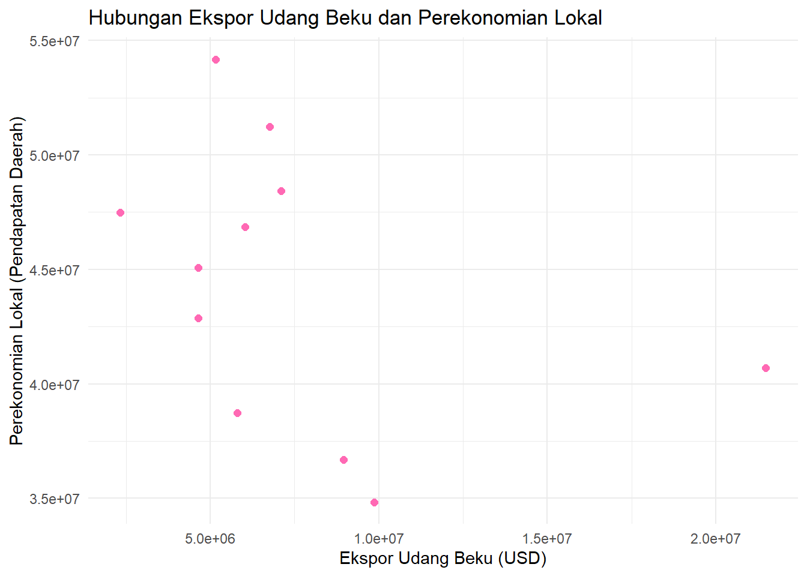
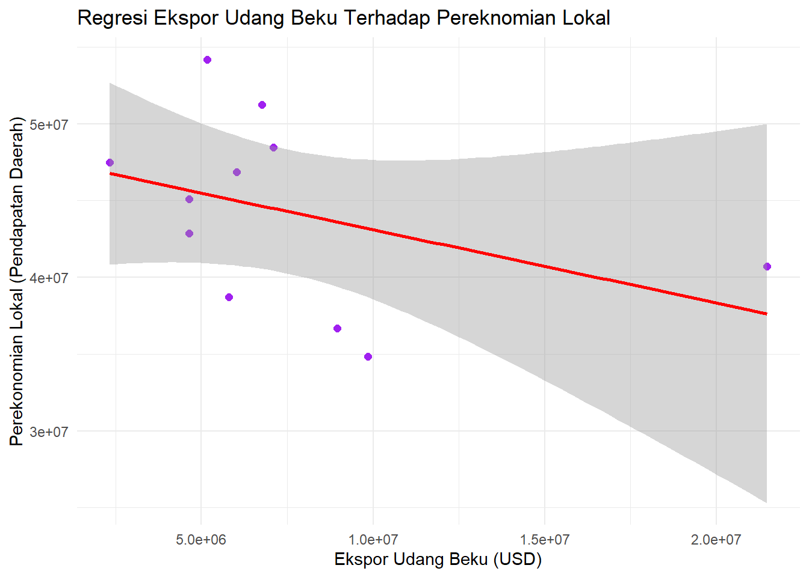
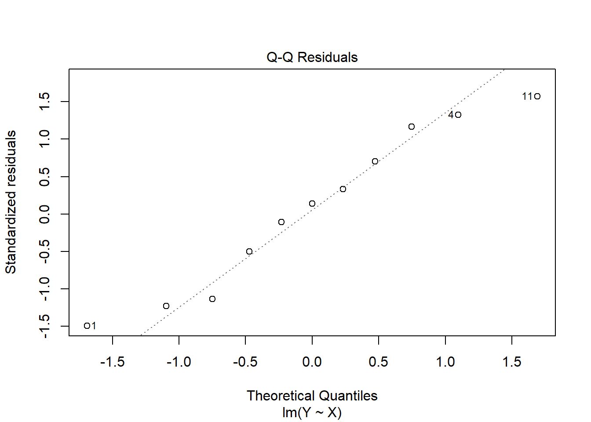
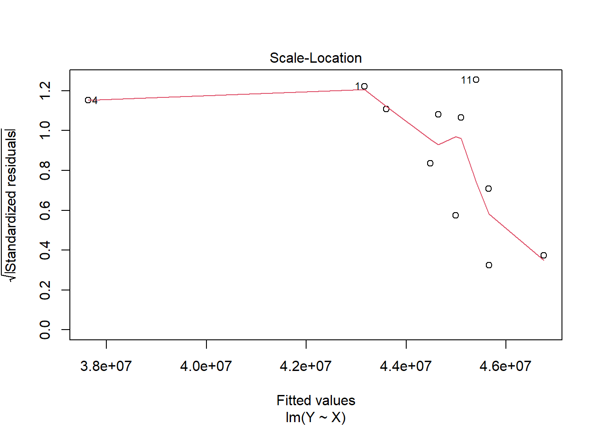

Pengaruh Ekspor Udang Beku di Kabupaten Cilacap Terhadap Perekonomian Lokal
Metode Penelitian Politeknik APP Jakarta
Author
Kayyisah Wan Azizah Maharani
Published
December 19, 2024
1 Pendahuluan
1.1 Latar belakang
Indonesia merupakan salah satu negara maritime dengan sumber daya kelautan yang melimpah. Industri perikanan di Indonesia berperan penting dalam mendukung pereknomian nasionalnya, terutama melalui sektor ekspor. Sekitar 50% dari total hasil ekspor perikanan Indonesia berasal dari komoditi udang beku. Indonesia memiliki potensi untuk memenuhi permintaan yang tinggi pada produk udang beku di pasar global seperti Amerika Serikat, Jepang, dan Uni Eropa. Salah satu daerah penghasil udang terbesar di Indonesia adalah Kabupaten Cilacap yang terletak di Jawa tengah dengan banyaknya kekayaan sumber daya laut. Udang beku merupakan salah satu komoditi yang paling banyak di ekspor kelima di Kabupaten Cilacap.
Udang beku sendiri adalah produk perikanan yang dibekukan agar awet tetapi kualitasnya tetap bertahan. Ekspor yang dilakukan di Kabupaten Cilacap dapat mendorong perkembangan industri terkait yang pada akhirnya akan berdampak positif bagi peningkatan perekonomian lokal di Kabupaten Cilacap.
1.2 Ruang lingkup
Berdasarkan data dari Badan Pusat Statistik, nilai ekspor non migas di Kabupaten Cilacap selama tahun 2013 hingga 2023 adalah sekitar 82.757.692,12 USD. Udang beku dengan kategori HS Code 030617 (Udang beku, termasuk yang telah dikupas atau dikupas Sebagian) menempati posisi kelima produk ekspor non migas tertinggi Kabupaten Cilacap dengan total ekspor senilai 25.044.172,37 USD dari tahun 2020 hingga 2023. Data yang didapatkan dari Resource Trade Earth menunjukkan negara tujuan utama ekspor udang beku dari Kabupaten Cilacap pada tahun 2020 hingga 2022 adalah United State, Japan, dan China. Ketiga negara tersebut mengimpor udang beku dari Indonesia yang kemudian di jual Kembali di retail atau digunakan untuk keperluan bahan baku makanan olahan di restoran atau hotel di negara tersebut. Ketiga negara ini dianggap sebagai mitra dagang utama karena permintaannya yang terus meningkat sehingga dapat mendukung kontribusi ekspor udang beku terhadap perekonomian lokal Kabupaten Cilacap.
1.3 Rumusan masalah
Pada penelitian ini akan mengkaji beberapa permasalahan seperti :
Bagaimana perkembangan ekspor udang beku Kabupaten Cilacap dari tahun 2013 hingga 2023 ?
Bagaimana peran ekspor udang beku terhadap perekonomian Kabupaten Cilacap dari segi pendapatan daerah dan sektor perikanan ?
1.4 Tujuan dan manfaat penelitian
A. Tujuan
Tujuan dilakukannya penelitian ini adalah untuk mengetahui perkembangan ekspor udang beku di daerah Kabupaten Cilacap pada tahun 2013 hingga 2023, serta untuk mengidentifikasi peran ekspor udang beku terhadap perekonomian lokalnya dari segi pendapatan daerah dan sektor perikanan.
B. Manfaat Penelitian
Untuk Akademisi
Penelitian ini membantu memberikan gambaran yang lebih detail terkait dampak ekspor udang beku terhadap perekonomian local di Kabupaten Cilacap
Untuk Industri
Membantu menganalisis faktor-faktor yang mempengaruhi proses produksi udang beku sehingga industri dapat mengoptimalisasikan proses produksinya agar kuantitas dan kualitas produknya dapat meningkat. Serta dapat membantu untuk membuat strategi marketing yang tepat untuk meningkatkan ekspor.
Untuk Pemerintah
Diharapkan pemerintah dapat menambah investasi di bidang infrastruktur dalam mendukung ekspor dan juga promosi destinasi wisata perikanan.
1.5 Package
Pada penelitian ini packages yang digunakan antara lain sebagai berikut:
library(readxl)library(tidyverse)
── Attaching core tidyverse packages ──────────────────────── tidyverse 2.0.0 ──
✔ dplyr 1.1.4 ✔ readr 2.1.5
✔ forcats 1.0.0 ✔ stringr 1.5.1
✔ ggplot2 3.5.1 ✔ tibble 3.2.1
✔ lubridate 1.9.3 ✔ tidyr 1.3.1
✔ purrr 1.0.2
── Conflicts ────────────────────────────────────────── tidyverse_conflicts() ──
✖ dplyr::filter() masks stats::filter()
✖ dplyr::lag() masks stats::lag()
ℹ Use the conflicted package (<http://conflicted.r-lib.org/>) to force all conflicts to become errors
library(ggplot2)
2 Studi pustaka
Ekspor adalah penjualan barang keluar negeri dengan menggunakan sistem pembayaran, kualitas dan syarat penjualan lainnya yang telah disetujui oleh eksportir dan importir. Manfaat dari melakukan ekspor adalah dapat memperluas pasar, menambah cadangan devisa negara, dan memperluas lapangan kerja. (Erni, Luviana, & Nurul , 2020) Menurut Boediono, salah satu sumber devisa yang dibutuhkan oleh suatu negara dengan perekonomian terbuka seperti Indonesia ada pada sektor ekspor, karena jika suatu negara dapat mengekspor secara luas ke berbagai negara maka akan memungkinkan pengaruh terhadap peningkatan jumlah produksi yang dapat mendorong pertumbuhan ekonomi sehingga dapat memberikan kontribusi yang besar bagi pertumbuhan dan stabilitas perekonomian. (Nurwahida, Sugianto, & Nurul Jannah, 2022)
Pertumbuhan ekonomi merupakan salah satu indikator penting dalam pembangunan dan perkembangan perekonomian suatu negara yang dapat meningkatkan kemakmuran dan kesejahteraan masyarakat pada tingkat pendapatan per kapita. Proses peningkatan output perkapita dalam jangka panjang juga merupakan pertumbuhan ekonomi. (Siti & Grace , 2021) Teori Hecksher-Ohlin menyatakan bahwa suatu negara melakukan perdagangan internasional karena adanya perbedaan pada faktor produksi yang dimiliki. Hal tersebut tidak hanya meningkatkan pendapatan tetapi juga mempercepat proses pembangunan dan pertumbuhan ekonomi (Safira, Sellya , Uswatun , & Muhammad , 2024). Indikator yang digunakan dalam mengetahui pertumbuhan ekonomi suatu daerah dari periode ke periode adalah dengan Produk Domestik Regional Bruto Atas Dasar Harga Konstan (PDRB ADHK).
3 Metode penelitian
3.1 Data
Data yang digunakan pada penelitian ini adalah data nilai ekspor udang beku dan PDRB ADHK Kabupaten Cilacap.
Tahun
Nilai Ekspor Udang Beku (X)
PDRB ADHK Kabupaten Cilacap (Y)
2013
$ 9.857.513,00
Rp 34.834.538,48
2014
$ 8.957.558
Rp 36.693.888,99
2015
$ 5.803.604,61
Rp 38.729.569,62
2016
$ 21.479.928,98
Rp 40.699.392,43
2017
$ 4.647.371,74
Rp 42.868.159,81
2018
$ 4.635.142,54
Rp 45.073.045,02
2019
$ 2.332.400,88
Rp 47.492.685,18
2020
$ 6.027.004,78
Rp 46.849.019,44
2021
$ 7.093.910,34
Rp 48.435.235,13
2022
$ 6.756.695,05
Rp 51.231.896,33
2023
$ 5.166.562,2
Rp 54.182.307,44
Penelitian ini menggunakan jenis data sekunder dengan runtun waktu (time series) pada tahun 2013 - 2023. Data sekunder tersedut didapat dari Badan Pusat Statistik Kabupaten Cilacap.
# A tibble: 6 × 3
Tahun X Y
<dbl> <dbl> <dbl>
1 2013 9857513 34834538.
2 2014 8957558 36693889.
3 2015 5803605. 38729570.
4 2016 21479929. 40699392.
5 2017 4647372. 42868160.
6 2018 4635143. 45073045.
library("ggplot2")ggplot(data, aes(x = X, y = Y)) +geom_point(color ="hotpink", size =2) +labs(title ="Hubungan Ekspor Udang Beku dan Perekonomian Lokal",x ="Ekspor Udang Beku (USD)",y ="Perekonomian Lokal (Pendapatan Daerah)") +theme_minimal()

Scatterplot Untuk Melihat Hubungan Antara X dan Y
3.2 Metode analisis
Metode yang digunakan adalah regresi linear dan korelasi. Regresi linear digunakan untuk mengetahui hubungan antara x dan y. model yang digunakan adalah regresi linear sederhana, dengan persamaan :
\[
y_{t}=\beta_0 + \beta_1 x_t+\epsilon_t
\] di mana :
\(y_t\) = Variabel dependen (PDRB ADHK pada periode \(t\) )
\(x_t\) = Variabel independen (nilai ekspor udang beku pada periode \(t\) )
\(\beta_0\) = Intercept atau konstanta
\(\beta_1\) = Koefisien yang menunjukkan pengaruh \(x_t\) terhadap \(y_t\)
\(\epsilon_t\) = Error term
Selanjutnya, penelitian ini menggunakan metode korelasi untuk mengukur kekuatan dan arah hubungan antara ekspor udang beku dengan perekonomian lokal.
4 Pembahasan
4.1 Pembahasan masalah
Varibel
Coefficient
Std. Error
t-value
Prob (.)
Intercept
2.205e+07
1.135e+07
1.943
0.084
Y
-3.281e-01
2.541e-01
-1.291
0.229
Berdasarkan hasil regresi yang didapat, persamaan regresinya adalah :
Setiap kenaikan satu unit ekspor udang beku (\(x_t\)) berhubungan dengan penurunan PDRB ADHK sebesar 0.3281 yang di tunjukkan oleh nilai koefisien . tetapi pengaruhnya tidak singnifikan berdasarkan nilai p > 0,05.
pada korelasi pearson menunjukkan hubungan sedang atau tidak terlalu kuat antara ekspor udang beku terhadap perekonomian lokal. sedangkan, pada korelasi spearman menunjukkan hubungan negatif sedang. peringkat ekspor udang beku berhubungan terbalik dengan peringkat perekonomian lokal.
ggplot(data, aes(x = X, y = Y)) +geom_point(color ="purple", size =2) +geom_smooth(method ="lm", color ="red") +labs(title ="Regresi Ekspor Udang Beku Terhadap Pereknomian Lokal", x ="Ekspor Udang Beku (USD)", y ="Perekonomian Lokal (Pendapatan Daerah)") +theme_minimal()
`geom_smooth()` using formula = 'y ~ x'

Garis regresi menunjukkan hubungan negatif antara X dan Y. P-value > 0.05 menunjukkan hubungan yang tidak signifikan seccara statistik. beberapa titik daya tidak terlalu dekat dengan garis tren yang artinya variabilitas tidak. Nilai \(R^2\) rendah sebesar 0.1562 yang menunjukkan bahwa 15.62% variansi dalam perekonomian lokal yang dijelaskan oleh ekspor udang beku.
4.2 Analisis masalah
Hasil regresinya adalah
model<-lm(Y~X, data = data)summary(model)
Call:
lm(formula = Y ~ X, data = data)
Residuals:
Min 1Q Median 3Q Max
-8334886 -4576268 739902 3507114 8779115
Coefficients:
Estimate Std. Error t value Pr(>|t|)
(Intercept) 4.786e+07 3.300e+06 14.506 1.51e-07 ***
X -4.762e-01 3.689e-01 -1.291 0.229
---
Signif. codes: 0 '***' 0.001 '**' 0.01 '*' 0.05 '.' 0.1 ' ' 1
Residual standard error: 5918000 on 9 degrees of freedom
Multiple R-squared: 0.1562, Adjusted R-squared: 0.06246
F-statistic: 1.666 on 1 and 9 DF, p-value: 0.2289
Uji asumsi regresi :
Normalitas Residu
plot(model, which =2)

Homoskedastisitas
plot(model, which =3)

5 Kesimpulan
Hasil dari penelitian ini menunjukkan bahwa, walaupun Kabupaten Cilacap memiliki potensi besar pada ekspor udang beku tetapi pengaruh kontribusi ekspor udang beku dengan perekonomian lokal tidak signifikan. Ekspor udang beku tidak mempengaruhi perekonomian lokal, terdapat variabel lain atau faktor-faktor lain yang lebih dominan mempengaruhi perekonomian loka secara menyeluruh.
6 Referensi
Cilacap, D. P. (n.d.). Nilai Ekspor/ Export Value (US$), 2013-2023. Retrieved from Badan Pusat Statistik Kabupaten Cilacap.
Endro , T. S., & Faujan , A. (2023). TRANSFORMASI KABUPATEN CILACAP MENUJU WILAYAH BERKARAKTER. JURNAL INOVASI DAERAH, 203-213.
Erni, F. H., Luviana, & Nurul , H. (2020). TINJAUAN DEFISIT FISKAL, EKSPOR, IMPOR DAN JUMLAH UMKM TERHADAP PERTUMBUHAN EKONOMI INDONESIA. Jurnal Benefita, 151-161.
Nainggolan, H. F. (2023, january 19). Pengasuh Ekspor Impor Terhadap PDRB Provinsi Jawa Timur 2008-2021. Retrieved from https://hizkiafree.github.io/
Nurwahida, Sugianto, & Nurul Jannah. (2022). Pengaruh Ekspor, Reksadana Syariah dan Utang Luar Negeri Terhadap. Jurnal Ilmiah Ekonomi Islam,.
Pemerintah Kabupaten Cilacap. (2022). Analisis Ekonomi dan Pendapatan Regional Kabupaten Cilacap Tahun 2022. In P. K. Cilacap, Analisis Ekonomi dan Pendapatan Regional Kabupaten Cilacap Tahun 2022. Cilacap: Kominfo kabupaten cilacap.
Safira, A. N., Sellya , N. K., Uswatun , K., & Muhammad , K. (2024). Pengaruh Ekspor, Impor, dan Nilai Tukar terhadap Pertumbuhan Ekonomi di Indonesia Periode 2014-2023. Ekonomi Keuangan Syariah dan Akuntansi Pajak (EKSAP), 58-73.
Siti, H., & Grace , P. A. (2021). ANALISIS PENGARUH EKSPOR DAN IMPOR TERHADAPPERTUMBUHAN EKONOMIDIINDONESIA. Jurnal Manajemen Terapan dan Keuangan (Mankeu).
Sri, R., & Muchtolifah. (2023). ANALISIS DAYA SAING DAN KINERJA EKSPOR KOMODITAS UDANG BEKU INDONESIA TERHADAP NEGARA KOMPETITOR UTAMA DI JEPANG. Jurnal EK&BI.